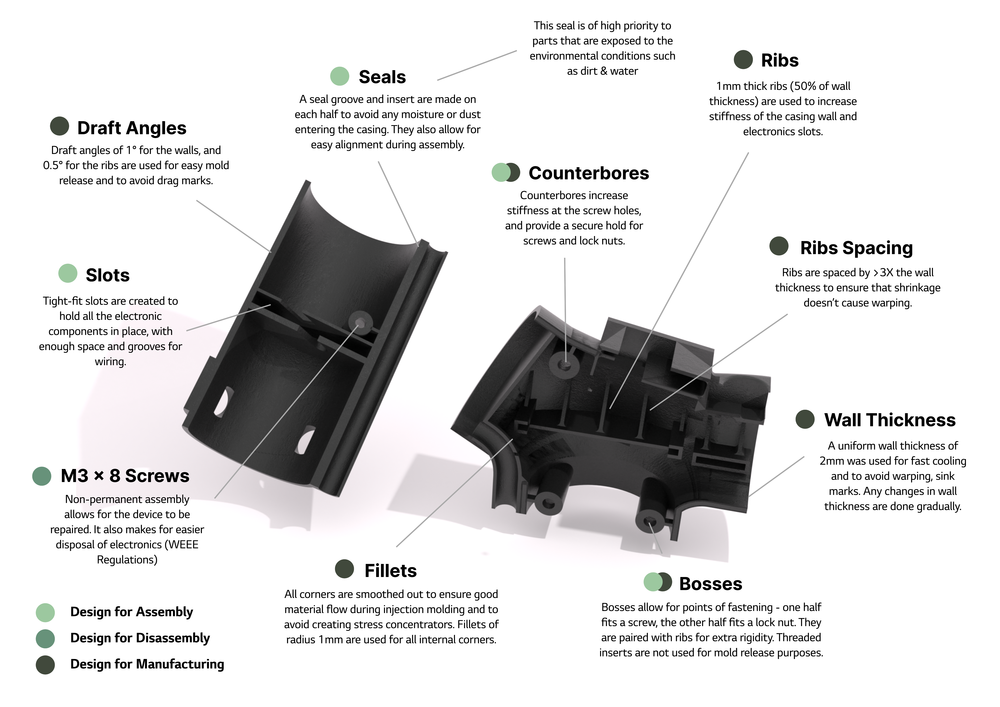

Through in-depth user research including conducting interviews, constructing personas and journey-mapping we
identified several core problems that may exclude specific user groups from accessing gardening as a hobby.
The core problems were identified to fall into categories assocaited with dexterity, mobility, strength and
precision. The evergarden tool aims to help elevate some of these problems to help make gardening more
inclusive to new users and those who have disconnected from their hobbies.
Prototyping
Through the prototyping process we gained a variety of skills including working with electronics (Ardiuno
nano, servo motors, magnetic connectors etc.), learning rapid additive manufacturing techniques such as 3D
printing and optimising the process for this to create fast, stable and high quality prints. Experiments and
testing with soil and dirt were also performed to ensure the tooling would work in the desired environment.
Design for Manufacturing & Assembly
Our product was designed for easy disassembly and repair to help increase it's lifespan.
Evergarden exists in a harsh environment, which includes exposure to moisture, dirt and other ogranic
materials, which can pose potential threats to internal electronics and components, seals were incorporated
into the casing design to mitigate this risk. Another major component of the design was intricately designed
ribs to ensure the electronics were fixed and secure in their correct positions.

CAD & Technical Drawings
An important element of the design was an extension tube aimed to alleviate the lower back pain associated
with leaning down for long periods of time when gardening by increasing the overall length of the tool.
This was a technical challenge as we had to ensure power could still be provided to the motor sutuated at
the lower half of the device whilst maintaining overall device alignment and effective sealing from the
environment.
The solution involved the use of both magnetic electrical connectors to ensure electrical connections and
larger button magnets to ensure a strong connection between the tubing.